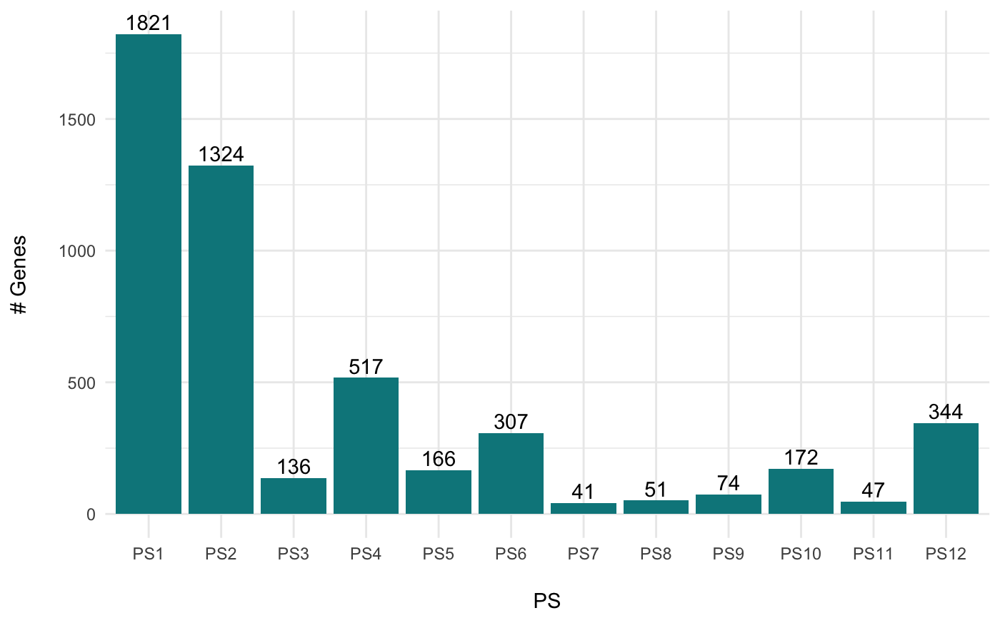

R/PlotSelectedAgeDistr.R
PlotSelectedAgeDistr.RdThis function visualizes the PS or DS distribution of a selected set of genes as histogram.
PlotSelectedAgeDistr(
ExpressionSet,
gene.set,
legendName = NULL,
as.ratio = FALSE,
use.only.map = FALSE,
col = "turquoise4",
xlab = NULL,
ylab = NULL
)a standard PhyloExpressionSet or DivergenceExpressionSet object.
a character vector storing the gene ids for which gene expression profiles shall be visualized.
a character string specifying whether "PS" or "DS" are are visualized.
logical value indicating whether or not relative frequencies shall be visualized.
logical value indicating whether or not a Phylostratigraphic Map or Divergence Map should be passed to the ExpressionSet argument instead of a standard ExpressionSet object.
colour of the bars.
label of the x-axis.
label of the y-axis.
data(PhyloExpressionSetExample)
# generate an example gene set
set.seed(123)
ExGeneSet <- sample(PhyloExpressionSetExample[ , 2], 5000)
# gene count example
PlotSelectedAgeDistr(ExpressionSet = PhyloExpressionSetExample,
gene.set = ExGeneSet,
legendName = "PS",
as.ratio = TRUE)
# relative gene count example
PlotSelectedAgeDistr(ExpressionSet = PhyloExpressionSetExample,
gene.set = ExGeneSet,
legendName = "PS",
as.ratio = FALSE)
